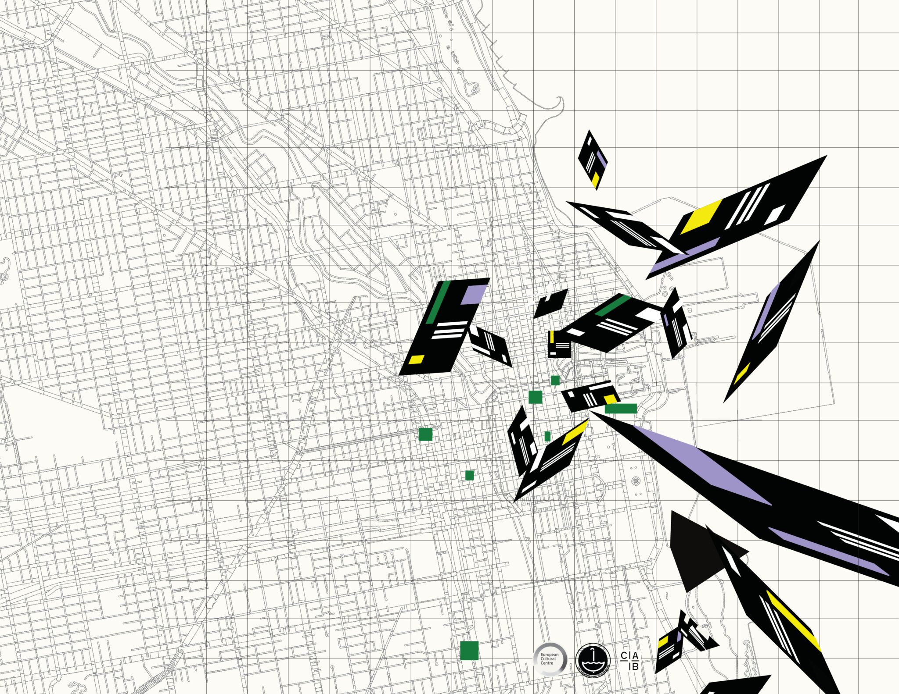

Top Stories - The Chicago Record
-
Mark Zuckerberg Lays Out a Vision for an A.I. Driven Downtown
The billionaire CEO believes that building data centers in vacant spaces in downtown can fast-track further A.I. development. Zuckerberg said that Meta is prepared to invest over $800 million in spending on Chicago data center development.
6 MIN READ -
LIVE
Meta's Commitment to Chicago: A.I., Future Technology, and Community Investments
- Zuckerberg highlights Meta's AI advancements and infrastructure development.
- Zuckerberg discusses generative technology and its impact on innovation.
- Zuckerberg says data center construction will enhance Chicago's position in the tech world.
-
Community Group Aims to Build Urban Hydroponic Farm
Farm the Loop, a local community collective, has proposed transforming a city-held vacant lot into a vertical, hydroponic farm. The collective hopes to promote sustainable agriculture and local food security.
5 MIN READ -
Google's Waymo plans to Expand Services to Chicago.
7 MIN READ -
Generative A.I. Caught Plagiarizing the Work of Local Artists
6 MIN READ
